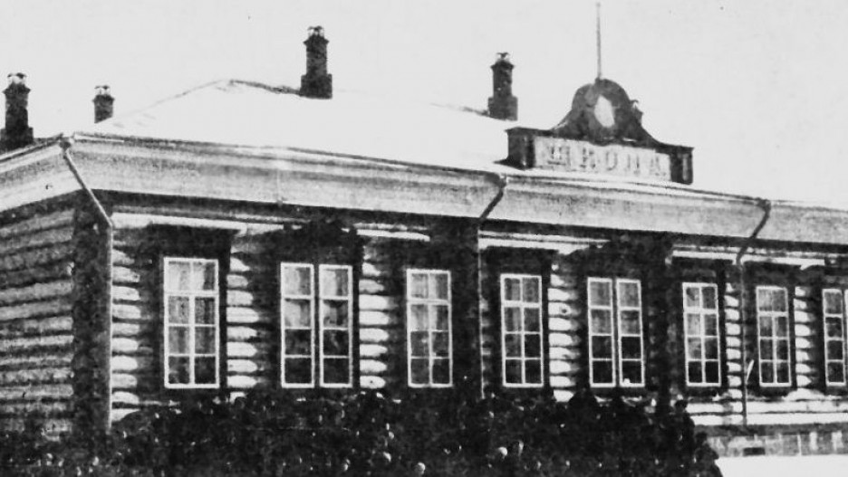

МБОУ "Гимназия № 42"
МБОУ "Гимназия № 42" – старейшее образовательное учреждение города Барнаула, имеющее богатые традиции в обучении и воспитании учащихся, образованное в 1920 году. Учредителем гимназии является комитет по образованию города Барнаула. Профильная дифференциация в школе начала осуществляться с 1965 года, когда был введен факультативный курс программирования (1972 год). Получение статуса гимназии в 1991 году было неслучайным, так как выпускники показывали хороший уровень знаний, поступая в ВУЗы города и других регионов. Гимназия № 42 – победитель ПНПО 2006 года, включена в 100 лучших образовательных учреждений России, имеет гран-при «Самое ИКТ-активное учреждение», входит в 100 лучших образовательных учреждений Национальной образовательной программы «Интеллектуально-творческий потенциал России», гимназия включена в ежегодный реестр России «Ведущие образовательные учреждения России», сайт МБОУ «Гимназия № 42» вошел в 100 лучших сайтов общероссийского рейтинга школьных сайтов, школьная газета «Наукоград-42» является печатным изданием зарегистрирована в Реестре школьной прессы России.

Муниципальное бюджетное общеобразовательное учреждение "Гимназия № 42" (МБОУ "Гимназия № 42")
29 января 1920 Приказом Губернского отдела народного образования (ГубОНО) учреждается Советская учительская семинария и при ней 42-ой школа в городе Барнауле. 1936 Школа №42 открыта в здании бывшего горного госпиталя, которое находится на Демидовской площади — одной из старейших площадей нашего города. Но вскоре началась Великая Отечественная война, и здание школы было вновь отдано под госпиталь. На восемь лет школа прекратила свое существование. 1950 Состоялось второе рождение школы в здании по пр. Красноармейскому, 94. Директор школы Павлищев Григорий Васильевич и коллектив учителей распахнули двери новой четырехэтажной школы. 1955 Школа №42 вошла в число 500 школ страны, участвующих в эксперименте по преподаванию предметов политехнического цикла и получила статус базовой школы Барнаульского государственного педагогического института. 1965 Школа определена подшефной Сибирского отделения Академии наук. Состоялся первый набор в специализированные физико-математические классы. Были разработаны учебные планы, программы, преподаватели проходили курсы переподготовки в Сибирском отделении Академии наук. Каждый месяц приезжали ученые из Новосибирского Академгородка и читали лекции школьникам и учителям о новейших открытиях во всех областях наук. 1966 В школе открыт музей, экспозиции которого были созданы учителями и ребятами под руководством Кузьмичевой Галины Ивановны. 1972 Впервые в Алтайском крае в школе №42 была установлена ЭВМ «Минск-12», а в обучение Львовым Олегом Ростиславовичем введен курс программирования. Позднее в гимназии была установлена ЭВМ «МИР-1», состоялось заключение договора с Московским областным педагогическим институтом по научно-техническому сотрудничеству. Все это способствовало тому, что выпускники физико-математических классов стали поступать в престижные ВУЗы страны (НГУ, МФТИ, МГУ). 1976 Школа переехала в новое здание по адресу проспект Красноармейский, 133. 1991 Школе N 42 был присвоен статус гимназии, целевые ориентиры и принципы которой определены в концепции развития школы, как гимназии информационной культуры. Были введены новые профили обучения: химико-биологический, гуманитарный, политехнический, информатики, электроники и инженерной физики. Расширились связи с вузами города. 1998 Открыт первый в Сибири и Дальнем востоке школьный Интернет-центр.